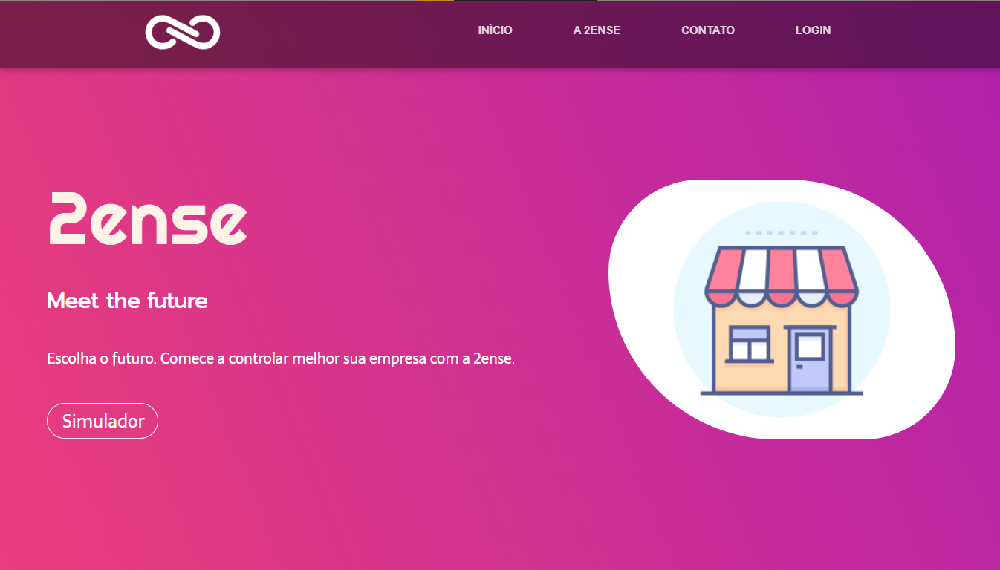
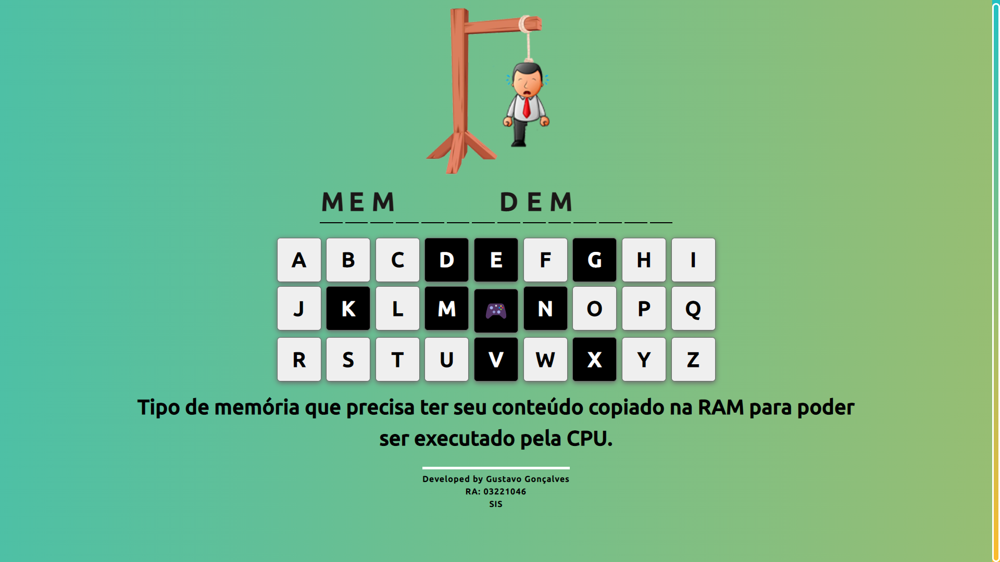

2ENSE
Este projeto foi desenvolvido visando uma solução de IoT para aquisição e gravação de registros(eventos), para posterior consulta via aplicação web. Saiba mais.

Jogo da Forca
Jogo da forca desenvolvido com JavaScript, CSS, HTML e utilizado bootstrap em um modal com mensagem personalizada.